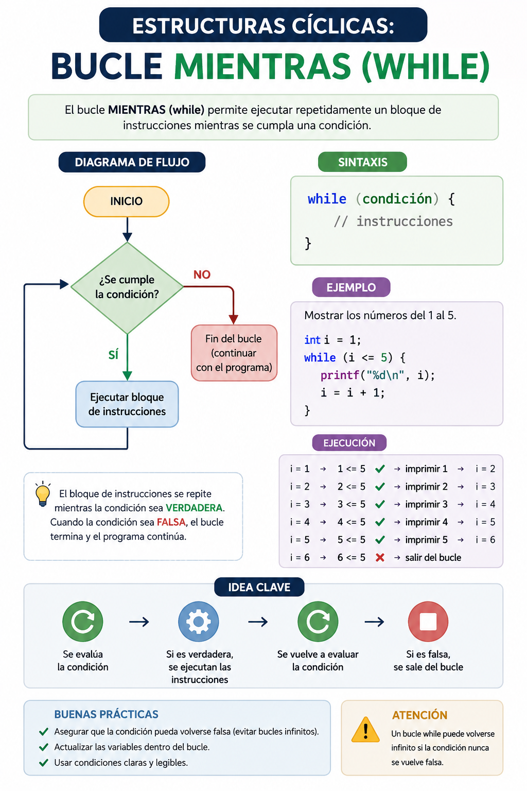

Imagina los limpiaparabrisas inteligentes de un automóvil. El sistema operativo del coche ejecuta una instrucción repetitiva: mover las plumas para limpiar el cristal. ¿Cuántas veces lo hará? No lo sabemos de antemano. Lo hará **mientras** el sensor detecte gotas de agua en el parabrisas. En el momento en que deje de llover (la condición se vuelva falsa), el ciclo se detiene de inmediato. Así operan los bucles pre-test en software.
⚠️ Debes visualizar el video completo sin adelantar para desbloquear la evaluación.
Material audiovisual adaptado con fines estrictamente educativos. Créditos del autor: Retro.

Las estructuras cíclicas o bucles permiten ejecutar de forma repetitiva un bloque de instrucciones. La estructura `Mientras` basa su ejecución en una condición de control evaluada de forma previa.
¿Qué sucede si la condición de control de un bucle `Mientras` evalúa como FALSA la primera vez que la computadora llega a la estructura?
¿Cuál es la consecuencia directa de olvidar actualizar o modificar la variable de control dentro del cuerpo de instrucciones de un bucle?
Basado en Joyanes Aguilar (2013), ¿en qué momento exacto evalúa la condición lógica la estructura cíclica 'Mientras'?
En el ejemplo de los limpiaparabrisas inteligentes de un coche, ¿qué condición hace que las plumas se sigan moviendo de forma repetitiva?
¿Cómo se define el término técnico "bucle infinito" según las ideas clave explicadas en la lección?
¿Cuáles son las tres formas válidas indicadas en el texto para alterar el valor de la variable de control interna?
Si sabemos de antemano el número exacto de veces que se repetirá un bucle "Mientras", ¿qué elemento del contexto real difiere de esta propiedad?
En el momento en que deja de llover en el ejemplo automotriz (la condición se vuelve falsa), ¿qué pasa con el ciclo?
¿Qué recurso físico de la computadora consume de forma indefinida un bucle infinito atrapando el flujo del software?
¿Cuál es el papel fundamental de la "Variable de Control (Modificadora)" en una estructura de repetición de tipo pre-test?